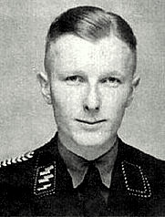
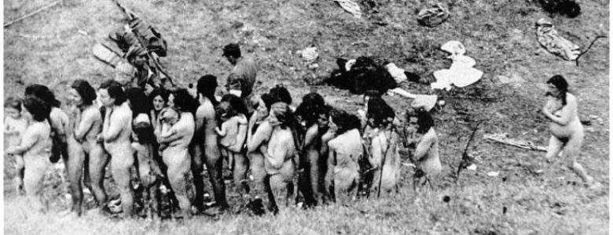

South East Asian News
Return to Homepage

Oradour-sur-Glane Massacre
On 10 June, Diekmann's battalion sealed off Oradour-sur-Glane and ordered everyone within to assemble in the village square to have their identity papers examined.
This included six non-residents who happened to be bicycling through the town when the SS unit arrived. The women and children were locked in the church, and the
village was looted. The men were led to six barns and sheds, where machine guns were already in place. According to a survivor's account, the SS men then began shooting, aiming for their legs. When victims were unable to move, the SS men covered them with fuel and set the
barns on fire. Only six men managed to escape. One of them was later seen walking down a road and was shot dead. In all, 190 Frenchmen died.
The SS men next proceeded to the church and placed an incendiary device beside it. When it was ignited, women and children tried to escape through the doors and windows,
only to be met with machine-gun fire. 247 women and 205 children died in the attack. The only survivor was 47-year-old Marguerite Rouffanche. She escaped through a rear
sacristy window, followed by a young woman and child.All three were shot, two of them fatally. Rouffanche crawled to some pea bushes and remained hidden overnight
until she was found and rescued the next morning. About twenty villagers had fled Oradour-sur-Glane as soon as the SS unit had appeared. That night, the village was
partially razed. Several days later, the survivors were allowed to bury the 642 dead inhabitants of Oradour-sur-Glane who had been killed in just a few hours. Adolf Diekmann said the
atrocity was in retaliation for the partisan activity in nearby Tulle and the kidnapping of an SS commander, Helmut Kämpfe.

Postwar trials
On 12 January 1953, a military tribunal in Bordeaux heard the charges against the surviving 65 of the 200 or so SS men who had been involved. Only 21 of them were present,
as many were in East Germany, which would not permit their extradition. Seven of those charged were German citizens, but 14 were Alsatians, French nationals whose home
region had been annexed by Germany in 1940. All but one of the Alsatians claimed to have been forced to join the Waffen-SS. Such forced conscripts from Alsace and Lorraine
called themselves the malgré-nous, meaning "against our will".
On 11 February, 20 defendants were found guilty. Continuing uproar in Alsace (including demands for autonomy) pressed the French parliament to pass an amnesty law for all
the malgré-nous on 19 February. The convicted Alsatian former SS men were released shortly afterwards, which caused bitter protests in the Limousin region.
By 1958, all of the German defendants had also been released. General Heinz Lammerding of the Das Reich division, who had given the orders for retaliation against the
Resistance, died in 1971, following a successful entrepreneurial career. At the time of the trial, he lived in Düsseldorf, in the former British occupation zone of West
Germany, and the French government never obtained his extradition from West Germany.
The last trial of a Waffen-SS member who had been involved took place in 1983. Former SS-Obersturmführer Heinz Barth was tracked down in East Germany. Barth had participated
in the Oradour-sur-Glane massacre as a platoon leader in the "Der Führer" regiment, commanding 45 SS men. He was one of several charged with giving orders to shoot 20
men in a garage. Barth was sentenced to life imprisonment by the First Senate of the City Court of Berlin. He was released from prison in the reunified Germany in 1997
and died in August 2007.
On 8 January 2014, Werner Christukat, an 88-year-old former member of the 3rd Company of the 1st Battalion of the "Der Führer" SS regiment was charged, by the state
court in Cologne, with 25 charges of murder and hundreds of counts of accessory to murder in connection with the massacre in Oradour-sur-Glane. The suspect,
who was identified only as Werner C., had until 31 March 2014 to respond to the charges. If the case went to trial, it could have possibly been held in a juvenile
court because the suspect was only 19 at the time it occurred. According to his attorney, Rainer Pohlen, the suspect acknowledged being at the village but denied being
involved in any killings. On 9 December 2014, the court dropped the case, citing a lack of any witness statements or reliable documentary evidence able to disprove the
suspect's contention that he was not a part of the massacre.